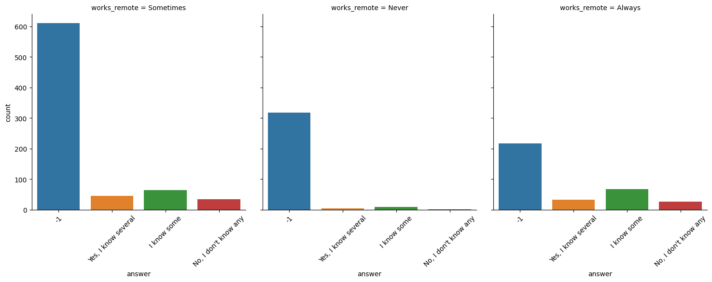

Germán Gasset's Portfolio
Skip to philosophy Skip to projects
Hi!
I'm a computer science passionate, now that I decided to learn data analytics, it has became my passion from the day I started learning it. The only 2 thing that I like more than data analytics are machine learning and love🥰🤣, I know Tensorflow, I've also made functional recurrent neural networks projects from scratch proving my calculus and CS skills but I prefer using libraries for practical projects.
Courses completed
(In the courses I learnt in a practical manner)
Harvards'X CS50 Introduction to computer science
What I learnt while doing projects for each subject:
- C
- Data structures and algorithms
- Python
- Sqlite3
- Html - CSS - Javascript
- Flask
Data Camp's data analyst track
I've finished Data Camp's data analyst track and recieved this statement-of-accomplishment
While also getting some data analytics skills on my own that will be listed below.
What I learnt doing 500+ exercises and projects:
- Pandas
- Numpy
- Scipy
- Matplotlib
- Seaborn
- Celluloid for animations
- Hypotheses testing using pandas, Numpy and scipy
- Statistics like sampling methods, normal distitributions, etc.. using Pandas, Numpy and Scipy
- Pingouin for Hypotheses testing
- Tensorflow and Keras
Philosophy I invented
Meta-Information Hypotheses


Summary:
Extension of Simulation Hypotheses
Key concepts:
- States what are the requirements of laws of physics for a chain of simulations (Multiverse) to exist.
- Expresses facts and probabilities which, given an infinite universe, have infinite possibilities of happening.
- Unifies popular culture like christianism or misticism with science.
Martism
Capitalistic society with communism on the higher points power of high-revenue companies to benefit the workers and to create public tech companies.
Key concepts:
- Part of the revenue of the highest-revenue companies will be stored by the government and analyced for corruption by private entities
- At least the object that is bought should be public of all transactions made from that money in companies.
Projects
Now working on: Sentiment analysis bya word-sentiment count and machine learning
Did the Capitol Assault increased the count of police deaths?
Disclaimer: Of politics I only care of how bad Spanish tech politics are made, I just wanted to know the effect of the Capitol Assault (with impresive results), attacks to the government may destabilize society and increase hate for authority.

Techniques used:
- Data visualization.
Some conclusions:
- During 2021 the count of police deaths increased by +600% compared to 2020
Arms Imports

Techniques used:
- Data wrangling
- Correlation visualization by GDP classifications
- Box plot
- Pandas groupby to visualization method
- Box plot for the 10 countries with the highest arms imports
Some conclusions:
- As GDP per capita increases the country tends to import more arms
Life expectancy analysis

Techniques used:
- Quantile calculation using NumPy
- Tracked countries evolution
- Hypotheses testing where I accept the null hypotheses but later I show statistics that prove otherwise
Some conclusions:
- Countries had a mild decrease of life expectancy during 2020
- Thanks to China's strict covid restrictions the country had no life expectancy decrease
- Africa has had the 10 lowest life expectancies, some countries have had lower life expectancies than prehistoric humans
Mental health in tech survey analytics
Techniques used:
- Sqlite3 manual exploration
- Sqlite3 to Pandas DataFrame
- Pandas DataFrame merge
- Groupby user statistics visualization.
Some conclusions:
Worldwide tobacco use analytics

Techniques used:
- DataFrame.Groupby
- Per-Continent box plot with an animation that each step is a year
- Hypotheses testing where I reject null Hypotheses
Some conclusions:
Tobbaco use will decrease in most countries in the future.
Did the Capitol Assault increased the count of school shootings?

Disclaimer: Of politics I only care of how bad Spanish tech politics are made, I just wanted to know the effect of the Capitol Assault (with impresive results), attacks to the government may destabilice society and extremization may increase hate for people with different ideas.
Techniques used:
- Data visualization.
Some conclusions:
- During 2021 school shootings increased by +100% compared to 2020 and decreased by +-60% during the next year.